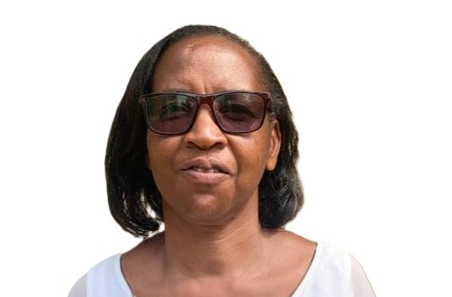
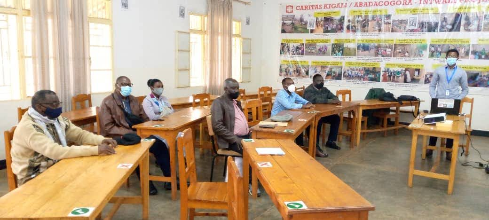
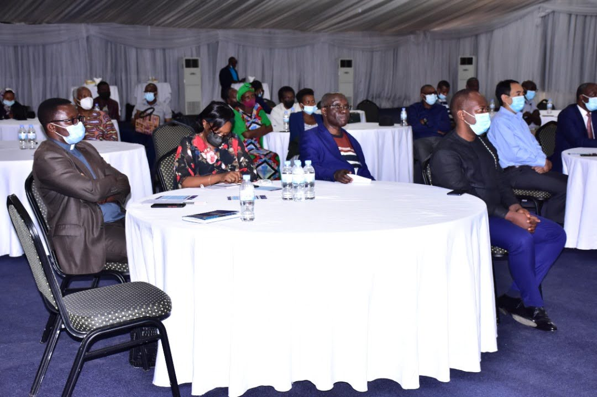
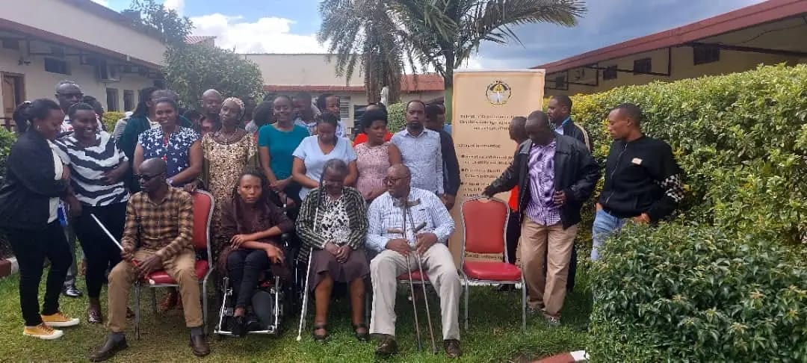
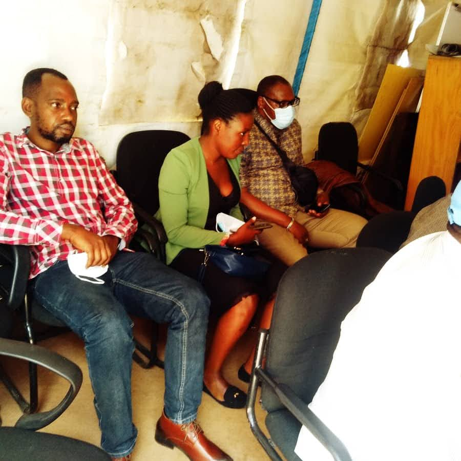

My Stroke Journey: A Story of Survival and Resilience
My name is Alexia Uwajeneza, and I am 46 years old. I have been living with the effects of a stroke for...
Read More →Stroke is a leading cause of death and long-term disability. It is a medical emergency requiring immediate recognition and rapid access to care. Every minute counts — rapid action protects brain function, independence, and quality of life.

We deliver a comprehensive, continuum-of-care approach to stroke in Rwanda — integrating public education, risk reduction, emergency response, acute management awareness, rehabilitation, and caregiver support.
Stroke symptoms appear suddenly and require urgent medical attention. Delayed treatment leads to irreversible brain injury.
Learn MoreUp to 80% of strokes are linked to modifiable risk factors. We focus on lifestyle changes and medical management.
Time-sensitive treatments save lives. We advocate for rapid access to acute stroke care in Rwanda's health facilities.
Stroke recovery does not end at hospital discharge. Long-term outcomes depend on structured, multidisciplinary rehabilitation.
Learn MoreStroke affects entire families. Caregivers play a critical role in long-term recovery and daily care. We provide guides, resources and community support.
Learn MoreWe call on government and health systems to invest in stroke care, integrate NCD strategies, and prioritize stroke in national health policy.
Learn MoreA stroke occurs when blood flow to the brain is interrupted. Without oxygen, brain cells begin to die within minutes. Time-sensitive treatments are most effective when delivered rapidly after symptom onset.
Ask the person to smile. Does one side of the face droop?
Ask them to raise both arms. Does one arm drift downward?
Ask them to repeat a sentence. Is speech slurred or difficult?
Call for emergency medical care immediately. Every minute matters.
To reduce the incidence, recurrence, and long-term disability associated with stroke in Rwanda through integrated prevention, advocacy for equitable access to acute stroke treatment, structured rehabilitation, caregiver support, and health system strengthening.
A Rwanda free of severe stroke, where stroke prevention is prioritized within national NCD strategies, where acute stroke care is accessible, where multidisciplinary rehabilitation services are available, and where every person affected by stroke receives comprehensive long-term support.

Not all strokes are the same. Understanding the difference is vital for proper medical treatment and recovery planning.
Personal stories from stroke survivors, caregivers, and health workers highlighting resilience and hope across Rwanda.

My name is Alexia Uwajeneza, and I am 46 years old. I have been living with the effects of a stroke for...
Read More →
Akimanizanye Epiphanie – Family Caregiver. In March 2020, my husband suffered a stroke, and since...
Read More →
I'm Jean Paul Hakizimana, a senior Physiotherapist with more than 10 years experience working in...
Read More →A glimpse into our workshops, awareness campaigns, and community outreach programs across Rwanda.






Answers to common questions about stroke, prevention, and how we can help.
A stroke is a serious medical emergency that occurs when blood flow to part of the brain is interrupted. This can happen due to a blocked blood vessel (ischemic stroke) or a ruptured blood vessel (hemorrhagic stroke). Without oxygen and nutrients, brain cells begin to die within minutes. Immediate treatment is critical to reduce brain damage, long-term disability, and death. Stroke is one of the leading causes of disability and mortality in Rwanda and worldwide.
Use F.A.S.T.: Face drooping, Arm weakness, Speech difficulty, Time to call emergency. Other symptoms include sudden vision problems, confusion, severe headache, dizziness, or loss of balance. These appear suddenly and require immediate medical attention. Early treatment significantly improves survival and recovery.
Yes — up to 80% of strokes are preventable. The most important risk factor is high blood pressure. Others include diabetes, high cholesterol, heart disease, smoking, obesity, and physical inactivity. Monitor blood pressure regularly, maintain a healthy diet, exercise consistently, avoid tobacco, limit alcohol, and manage chronic conditions. Preventive care plays a vital role in reducing stroke in Rwanda.
A Transient Ischemic Attack (TIA) is a temporary blockage of blood flow to the brain. Symptoms are similar to a stroke but typically resolve within minutes or hours without permanent damage. However, a TIA is a serious warning sign of a possible future stroke. Anyone experiencing TIA symptoms should seek immediate medical evaluation to prevent a full stroke.
We promote public education on stroke symptoms and prevention, advocate for timely access to treatment and rehabilitation, support survivors and caregivers through awareness and community engagement, and encourage improved long-term care and disability support. Our vision is a Rwanda where every person affected by stroke has access to timely care, rehabilitation, and long-term support.